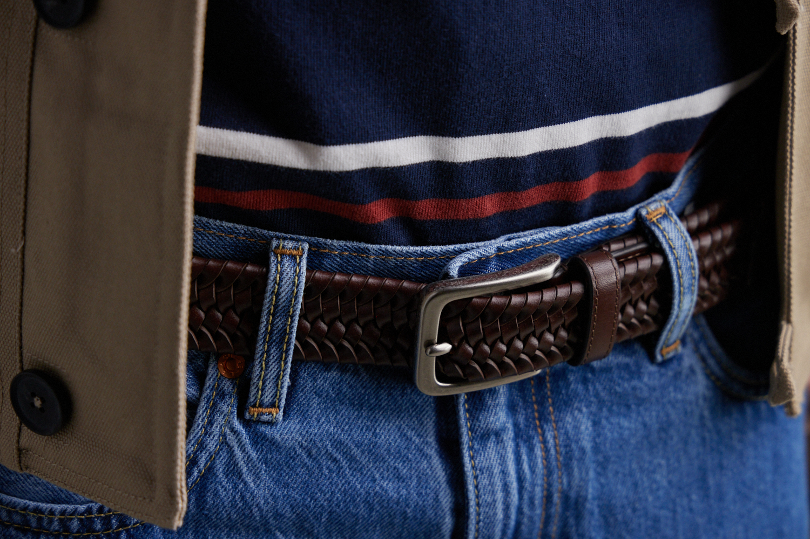

Strategic Assessment
Strategic Brand Assessment for Walmart
Connecting accessories to apparel through data-driven analysis and a compelling creative vision.

Walmart came to us with a strategic question: how could they better connect their men's accessories business with their national-brand and private-label apparel?
As the nation's largest retailer, they needed to know whether their current assortment was telling a cohesive story or leaving gaps competitors could fill. The brief: evaluate existing brands, identify white space, and demonstrate how accessories could “complete the look” across a famously broad customer base — capturing the widest possible audience with minimal overlap.
The approach
As Design Director, I led our team through an analysis that balanced hard data with creative vision. We started where good strategy always begins: understanding what already exists.
Research & analysis
We assessed Walmart's current brand portfolio and cross-referenced it against the accessories we already developed for them. The team visited stores to see how products actually lived on shelves and analyzed the online experience. That dual perspective — physical and digital — revealed where the assortment was over-saturated and where white space existed.


Creative execution
Data tells you where the gaps are. Creative shows you how to fill them. We purchased Walmart's existing apparel across their private-label brands and organized a professional photo shoot with models. Using a strategic mix of current accessories and new designs, we styled complete looks spanning the full spectrum of Walmart's customer — from budget-conscious basics to trend-forward styles — each look targeting a distinct customer without overlap.


Data tells you where the gaps are. Creative shows you how to fill them.
On the assessment method
Strategic synthesis
I led the final presentation, combining analytical findings with the visuals from the shoot. It didn't just show what was possible — it made specific recommendations on drops and adds to the assortment, backed by both market data and creative proof of concept.


The outcome
I presented to Walmart’s men’s accessories buying team and their design leadership — not a mood board, but a decision-ready assortment roadmap. Specific adds and drops, each backed by the data and a styled, on-figure proof of concept the buyers could evaluate at a glance. The work reframed accessories from an afterthought into a “complete the look” driver across every customer segment, and gave the team a clear path to a more cohesive, less redundant assortment.